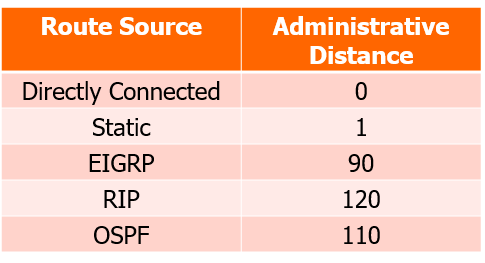

Network Tech 2
Routing
For data, there are multiple paths in which data (packets) can be transferred. The paths consist of routers with information being transferred router-to-router in hops.
Routing is an extremely complex process. It uses the routing table which can be statically and dynamically determined.
Terms
- Routing = process of sending a packet (datagram) from one network to another
-
Routing table = a data structure that tells the router the next hop in
order to get to the destination. The table is located (in memory) on
each router.
- 2 types = C - connection, S - static
-
contains destination network/subnet mask, “next hop” address and
routing metrics (cost, admin distance)
- Admin distance: the lower = more trustworthy
-
Routing protocols = software that populates routing
table. They will:
- Check for available routes
- Check for most efficient routes (by distance, speed, load, etc.)
- Advertise/share the efficient routes.
Static Routing
Type S in routing table
Static Routing have admins manually update the routing table to get to the remote network. It is mostly used on the peripheral networks (home/stub) which have a very small routing table and use a default route of 0.0.0.0 (quad zero)
Advantages
- Very efficient as no bandwidth is wasted with routing tables being exchanged between routers
- Possible to force data along particular path - load balancing
- Short routing table if there’s a default route of quad zero (0.0.0.0)
Disadvantages
- If a path goes down, no alternative path exists.
- If network topology changes, the table has to be updated manually.
Autonomous Systems
They are a group of networks that share the same routing policy. (HEA, Virgin Media, etc.) They are self-sustained and has a number: ASN (e.g. ASxxxx).
- Independent sub-section of the internet
- Outside world -> view as single entity
- One router within the AS is a border node (dual-homed) e.g. Level3
- First level routing is within an AS
- Next level routing is between AS
Dynamic Routing
Example: RIP (routing information protocol), OSPD (open shortest path first), IGRP, EIGRP, IS-IS, BGP
Dynamic routing is often used to keep the cost of maintaining the routing table down.
Every router would:
- decides which networks it wants to “tell the world” about
- periodically forwards/receives ads of the router
- Assimilates in new routing information into routing table.
The main disadvantage is that a lot of bandwidth would be wasted by sending out periodic ads (routing data)
Two classifications of routing protocols: distance vector and link state.
Distance Vector
EIP, IGRP, EIGRP
Displays local information, like a sign post. In the router, simply go to the RIP option and add IP gateways.
- Routers would periodically advertise FULL routing table to all neighbours by broadcasting it. (10-90s updates, too frequent - congestion, too slow - slow convergence)
- Each router learns routes from its neighbours perspectives and then advertises these new routes from its own perspective.
-
RIP would uses the route with the lowest hop as a preferred
route.
- If same hops = perform equal load balancing
Link State
OSPF, etc.
Looks at the state of the network (bandwidth, load, delay, reliability, congestion or any combination) and decide on the most efficient route.
-
Each router has a map of AS, and make the decision based on that.
- The map is done by first flooding the router with ads and make an AS map. Then calculate the shortest path using the map.
- Decided by the metric of the route
- Algorithms in this would have each router telling the world (AS) about its neighbours.
- Router multicasts updates whenever this network topology changes
Benefits
- Routing info propagates quicker and more stable than RIP
- Generates lower volume of traffic, as it would only advertise the sections that are changed.
Routing over UDP
- Uses multicasting: 224.0.0.5, 224.0.0.6
- Can perform load balancing - distribute network traffic across equivalent routes - creates greater flexibility.
Metric of the Route
Best route = lowest cost, calculated from bandwidth
Formula:Cost = 10^8/bandwidth
Routing in the Real World

From the diagram, there’s going to be at least one border gateway protocol (BGP) in an AS that routes all the other AS together. Everything goes up from lowest to the border
- No router has knowledge of every network on the Internet
- Examples of AS: HEA (AS1213) has addresses 193.1.0.0/16 up to 192.1.255.255/16
IANA
It is an organisation that issue large, short-prefix blocks of IP addresses to each of the five RIRS: ARIN (NA), LACNIC (South America), RIPE NIC (Europe), AFRINIC (Africa) and APNIC (Asia-Pacific)
The individual RIRs would subdivide these blocks and allocate them to Local Internet Registries (LIRs) aka ISPs.
The autonomous system allocates addresses to its networks/LANs. (193.1.56.0/21)
The GMIT IP Address
193.1.56.14
- 193 = RIPE NCC is responsible for addresses 193...* to 195.255.255 destination in Europe
- 1 = HEA assigned addresses with 193.1/ProjectManagement_CMD/16
- 56 = GMIT responsible for 193.1.56.*/21
- 14 = GMIT’s public IP addresses on the Internet
TCP & UDP
The transport layer: there are two protocols available - TCP (Transmission Control Protocol) and UDP (User Datagram Protocol)

- Protocol Data Unit (PDU) called a segment
- End-to-end service
- Layer 4 data stream = only relevant on source and destination device
Port Numbers
They are used to identify applications running on a device on both source and destination. Up to 65,536 (2^16) different port numbers.
It uses a socket which is an end point in communication. It allows multiple software apps to simultaneously use a single IP address. Format: IP:Port. Example:
- 192.168.1.70:80 = HTTP
- 192.168.1.7:443 = HTTPS
- 192.168.1.7:3306 = MySQL

UDP and TCP

UDP (User Datagram Protocol)
Bare bones transport protocol. Segments may be lost or delivered out of order. Deemed as connection less - fast, no handshaking. Each UDP segment is also handled independently of others.

TCP (Transmission Control Protocol)
TCP Layer 4 enhances services provided by layer 3 (which packets can be lost) This is a reliable delivery service.
- Point-to-point protocol - app-to-app
- Full duplex - MSS: maximum segment size
- Connection-oriented via handshaking
- Flow controlled: sender not overwhelm receiver.
Mechanism:

The yellow square = windows - how much data would send/receive (windows size) Segment:

Piggy Backing
TCP uses Piggy Backing. As well as application data, TCP also include control information which “piggy backs” on actual data being sent.
Connection Set-Up
- Header: port numbers (source and destination), sequence number, acknowledgement number
- Control: Syn, Ack
Two devices would synchronise on each other’s TCP initial sequence numbers (OSN):
- Sequence numbers would track the order of data and ensure that no data is lost.
- ISN do not start at 0 or 1 as TCP Sequence Prediction Attacks could occur, if both side started with 0.
Three way handshake: -> SYN -> SYN-ACK -> ACK

Connection Termination
- Two FIN flags to terminate a session.
- Device enters a FIN-WAIT state. No additional data is accepted, but continue to receive segment from a server

TCP SYN Flooding
This is when an attacker sends a SYN request with a spoofed source IP to a host. Everything will be the same but there would never be a final ACK message, which results in half-open connections. More of this = too much backlog = Denial of Service (DoS)
Distributed Denial of Service (DDoS) is similar to this, but with multiple attacking devices instead.
DNS
DNS = Domain Name System, uses port 53
Maps (Matches) names to numbers
First place the os looks is the hosts file
The DNS server come in pairs of 2 usually, and in a master and slave configuration.
DNS translates human readable domain names to machine readable IP addresses
- Query response control
- Uses in websites AND emails
- Can host several servers on same device, with different domains, but same IP
- Uses UDP (user datagram protocol) as it is faster than TCP.
- IT IS THE WEAKEST SECURITY LINK
Domain
Domain is an adminstrative area e.g. .com, .net, etc.
- It can be partitioned into sub-domains and so forth -> up to 127 sub-domains
-
Uses FQDN (Fully Qualified Domain Name), reading from
right to left
-
e.g. timetable.gmit.ie
- ie = administrative area - top level domain
- gmit = 2nd level domain
- timetable = subdomain
-
e.g. timetable.gmit.ie
DNS (continued)
DNS IS A SCALABLE, HIERARCHICAL AND DISTRIBUTED DATABASE
-
It has a total of 100k+ databases called name servers
- Each has a zone file.
- Each row in the database are records
-
Many record types
- A = IPv4 address (AAAA = IPv6 address)
- CNAME = CANONICAL NAME aka alias
- MX = mail server
- NS = name server
- Uses port 53 - query and response control
To display the DNS, type in command prompt: ipconfig/displaydns
DNS would go in pairs: master/slave or primary/secondary. This is to balance the load of the servers. They are both in sync.
Classes of DNS Servers
- Root DNS
- TLD - Top-Level Domain e.g. .ie, .com
- Authoritative DNS Servers -> maintained by organisation or ISP
- Local/Cache/Default Name Servers -> Uses caching servers (temporary storage)
Once any name server learns mapping -> caches
- Has TTL (time to live)
- Root name servers are not visited often in this case.

Root DNS
- Contains mappings for all TLDs
- The zone file indicates who to contact next
- Has 13 routes - A route, B route, etc. They are all cloned.
Format:
TLD, TTL, IN, TYPE, LINK
Example:
.ie, 172800, IN, NG, d.ns.ie
ns stands for name servers
Top-Level Domains
1,488 TLDs
Internet Assigned Numbers Authority would classify the domains into three types:
- Country code TLD (ccTLD) = .ie, .th, .tv
- Generic TLD (gTLD) = .com, .net
- Infrastructure TLD - ARPA and such
Authoritative DNS servers
- Contain zone files
- Owned and managed by organisation / company
DNS Cache/Local/Default Servers
- No zone files
- Provided Caching service for DNS data
- Located in end devices / ISP / etc
Example DNS: Google DNS
Primary: 8.8.8.8, Secondary: 8.8.4.4
They are considered as anycast address
DNS Queries
Seperated into two types: recursive and iterative
- A recursive request puts the responsibility on the root server where as the…
- Iterative request spreads out the load between all the DNS servers.
In reality, recursive query is used between the machine and the local DNS servers that were set up. Iterative queries are used in between those DNS servers and higher-up DNS servers
Zone Files
in System32, if DNS is implemented
Zone files contain zone information -> collection of records.
- Format: domain_name.zone
-
Records: Resource Records (20+ types)
- Examples: SOA (Start of Authority), A/AAAA, CNAME, MX, RRSIG (digital signature)
-
Each domain has two servers -> master & slave (primary/secondary,
DNS1/DNS2)
- It is possible to have more than two servers, usually in pairs.
- Slave periodically request update from Master -> zone transfer
Structure

DNS Spoofing (DNS Cache Spoofing)
Traditional DNS queries and responses are sent without encryption. Corrupt data is introduced for those data, which would return incorrect IP addresses.
Prevention
- Use DNSSEC (Domain Name System Security Extensions) - supported by 8.8.8.8
- Add authentication trust layer
-
Each zone has private/public key pair
- Public key is published using DNS (DNSKEY)
- Private key is stored safe and offline, containing individualised DNS data
Prevention Steps
- Group all the records of the same type into a RR set
- Generate digital structure (RRSIG) with private key
- Add RRSIG to zone file
- Add DNSKEY (public) to zone file.
Each cache receiving a response must verify the authenticity of the name server.
Alternative to DNSSEC
- dns.google.com (DNS-over-HTTPS)
- OpenDNA
- CloudFlare
Transport Layer Security (TLS)
To be continued in week 6
TLS is a follow on of SSL (Secure Socket Layer) TLS is also in the application layer.
Two algorithms are used: encryption and hash (for integrity)
Security has three main components:
- Authentication - verification
- Integrity - quality of data - data shouldn’t be changed.
- Confidentiality - encrypted - either symmetric or asymmetric
TLS implements all 3 of the security components
Types of Encryption
-
Symmetric encryption - oldest and fastest EXCEPT on how to get a key
from A to B
- The key is also called, session key, symmetric key or shared key
- Size: 128/256 bits wide.
-
Two types of key distribution:
- Out-of-band key distribution - physical usage (text, owls, letter) - but slow
- In-band key distribution: RSA, DHE, ECDHE
- Algorithms used: AES (advanced encryption standard), DES (data encryption standard), CCM, GCM
-
Asymmetric encryption
-
Two separate keys, public and private
- If data is encrypted by public key and decrypted by private key -> determines confidentiality
- If data is encrypted by private key and decrypted by public key -> determines authentication
- Size: 2k-8k bits – 4k bits require by most
- Algorithms used: RSA (usage of certificates, see below), DSA
-
Two separate keys, public and private
Certificates
Certificates are usually 509 certificates, storing the public keys. It contains:
- name of subject
- name of issuer
- public key value
Certificates can be either paid or free (if free, the integrity of the issuer is also considered)
Authentication is by two types:
-
One-way = default
- You don’t know who the person connected to are.
-
Two-way (mutual) = optional, doesn’t have as both have to have their own
certificates -> cost money
- OR (WITHOUT CERTIFICATE) each has to give its authenticative data
TLS
TLS is a set of protocols, 4 types of protocols: TLS Handshaking, TLS Change Cipher Spec, TLS Alert and TLS Record
Handshaking Protocol
The handshaking protocol starts with:
- Asymmetric encryption, by which the user encrypts the data by their public key with the receiving end decrypting it using their private key
- They then exchange keys (shared keys) with each other using RSA. With that, they will use symmetric encryption from then onwards.
Three types:
- RSA Handshaking (described above)
- Diffie - Hellman Ephermeral (DHE)
- Elliptic Curve Diffie - Hellman Ephermeral (ECDHE)
Cipher Suite
Cipher suite are used to determine how the client and the server would exchange information to each other for authentication purposes. Format:
Key Exchange Algorithm_Key Exchange_Symmetric Encryption Algorithm_Data Algorithms
- Key Exchange Algorithm = how symmetric key is generated and distributed (RSA, DHE, ECDHE)
- Key Exchange = digitial signature on d, g parameters
- Symmetric Encryption Algorithm = bulk algorithm (AES*, DES, etc.)
- Data Algorithms = SHA1, SHA256, etc. – secure hash algorithm
Protocols
RSA
-
Client Hello
- Client sends algorithm they could use
- Server selected cipher suite to use
-
Server Hello
- Server gives 509 certificate with server’s public key and cipher suite preferred (authenticated via provider)
- Client generate a pre-master key (encrypted with public key in the certificate)
-
Client Key Exchange
- Server’s private key decrypts the pre-master key
-
Change Cipher Spec
- Server sends key back and client decrypts it to make sure everything is okay
- Application Data Exchanges
RSA key encryption is not use at all in current time as if old machines having the private key are passed over to someone else, they can use it in a malicious way. PFS (perfect forward security) makes sure that everything can be used in the future.
DHE
-
Client Hello
- Same as with RSA
- Server generates a private number: a and the result of g^a mod P (P is the prime number)
-
Server Hello
- Server sends its certificate and numbers: g, P and g^a mod P
- Client would authenticate and generates a private number: b and the result of g^b mod P
- Client would also raises the g^a mod P number by b to be (g^a mod P)^b -> g^ab mod P
-
Client Key Exchange
- Client sends the result of g^b mod P
- Client would also raises the g^b mod P number by a to be (g^b mod P)^b -> g^ab mod P (SAME AS WITHIN THE CLIENT)
- If same, the server would then generate the session ticket.
-
New Session Ticket
- Server packages a session ticket that sends to the client with keys (encrypted)
- Application Data Exchanges